Hypothesis: The feature space constructed from SPY price history contains statistically reliable information about 21-day forward returns. A RidgeRegression model trained on 7 engineered features can extract this signal and translate it into a risk-adjusted return edge after transaction costs.
Feature rationale:
mom_20** (window: 20): Trailing-return momentum captures the continuation of recent price trends — a well-documented persistent anomaly attributed to investor underreaction and gradual information diffusion.vol_21** (window: 21): Rolling realised volatility characterises the current market regime: elevated volatility signals risk-off environments where expected returns and risk premia shift materially.zscore_20** (window: 20): Rolling z-score normalisation transforms raw signals into a stationary, mean-zero representation, mitigating regime-level drift that would otherwise confound the model's cross-period comparisons.trend_20** (window: 20): Trend strength (slope R²) quantifies how consistently directional a price series has been — distinguishing sustained trends from noisy mean-reverting behaviour.
Label construction: forward_returns with 21-period horizon. Forward log returns are the direct target of the predictive task: the model learns to rank periods by expected price appreciation.
Model choice: Ridge regression (L2 regularisation) is the natural baseline for financial ML: it is interpretable, computationally stable, and its regularisation controls overfitting in the high-noise, low signal-to-noise regime of asset returns without eliminating features entirely.
| Hyperparameter | Value |
|---|---|
| alpha | 1.0 |
Signal translation: The sign signal translates continuous predictions into a binary long/flat position: positive prediction → long, non-positive → flat. This is the simplest leakage-free translation of regression output into a tradeable signal.
Key risks and limitations:
Scope: This investigation is a systematic demonstration of the full ML research process: feature engineering, leakage-safe alignment, regularised model training, walk-forward validation, and signal translation. *The methodology is the product.*
The research universe comprises 1 institutional ETF spanning US equities (SPY). The panel covers 3,020 trading days (2013-01-02 to 2024-12-31), providing a structurally diverse cross-sectional environment for regime-heterogeneous research.
Asset coverage summary:
| Asset | Trading Days | First Date | Last Date | Missingness | Mean Ann. Vol |
|---|---|---|---|---|---|
| SPY | 3020 | 2013-01-02 | 2024-12-31 | 0.0% | 14.8% |
Universe integrity:
All 1 assets have complete coverage across all 3,020 trading days (2013-01-02 – 2024-12-31). Missingness: 0.0% for every asset. No structural gaps, delistings, or duplicate timestamps detected. Universe breadth is structurally stable throughout the backtest period.
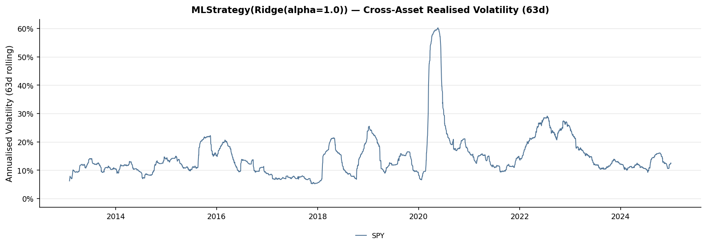
*63-day rolling annualised volatility by asset. Persistent divergence between risk-on and risk-off assets confirms macro regime heterogeneity. Synchronised spikes identify systemic stress episodes.*
Data source: Yahoo Finance daily OHLCV data, ingested via yfinance and persisted to local Parquet files for reproducibility. All prices are adjusted closing prices.
Alignment policy: Inner join across all universe constituents — only trading days on which every asset has a valid price are retained. This ensures a consistent observation timeline for feature construction.
Missing value policy: Forward-fill up to a configurable limit (default: 5 trading days) for isolated gaps caused by exchange holidays or data vendor gaps. Gaps exceeding the limit remain NaN and are surfaced in diagnostics rather than silently filled. Over-cleaning (excessive interpolation) introduces bias by smoothing market structure.
Coverage: 3020 trading days from 2013-01-02 to 2024-12-31 across 1 assets.
| Asset | NaN Count | Ann. Return | Ann. Volatility |
|---|---|---|---|
| SPY | 0 | 13.0% | 16.8% |
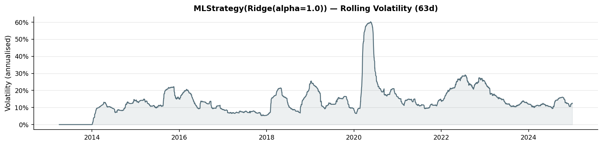
*63-day realised volatility. Elevated regimes and spikes contextualise coefficient instability, feature drift, and drawdown episodes below.*
The SPY price history is transformed into a structured feature space. Each feature operationalises a specific hypothesis about the information content embedded in price time series — momentum persistence, volatility clustering, or trend strength. All features are constructed as pure functions of historical prices, ensuring no look-ahead contamination at the feature generation stage.
Feature registry — 7 features constructed on SPY:
| Name | Family | Transform | Window | Normalisation |
|---|---|---|---|---|
| 20D Momentum | Trend | trailing_return | 20 | raw |
| 60D Momentum | Trend | trailing_return | 60 | raw |
| 252D Momentum | Trend | trailing_return | 252 | raw |
| 21D Realized Volatility | Volatility | rolling_std_annualised | 21 | raw |
| 20D Z-Score | Mean-Reversion | rolling_zscore | 20 | zscore |
| 20D Trend Strength | Trend | slope_r2 | 20 | raw |
| 5D Momentum | Trend | trailing_return | 5 | raw |
*Rolling z-score features are normalised in-place: mean and standard deviation are estimated over a rolling window centred at time t−1. This ensures normalisation parameters are derived from past data only, preserving the leakage-free property.*
Label construction:
| Parameter | Value |
|---|---|
| Label type | forward_returns |
| Horizon | 21 trading days |
Sample construction and alignment:
| Stage | Count / Value |
|---|---|
| Raw price observations (per asset) | 3020 |
| Warm-up rows removed (feature NaN) | 252 |
| Label rows removed (forward horizon NaN) | 21 |
| Final aligned training samples | 2747 |
| Total alignment loss | 9.0% |
| Effective sample range | 2014-01-02 to 2024-11-29 |
*Warm-up rows are removed when rolling feature windows require a minimum history (e.g., a 252-day momentum feature has no valid value for the first 252 observations). Label rows are removed because the forward return horizon creates NaN labels on the final N trading days of the sample.*
Per-feature statistics (full-history, pre-alignment):
| Feature | Mean | Std | Skew | AR(1) | Coverage |
|---|---|---|---|---|---|
| 20D Momentum | 0.0103 | 0.0416 | -1.30 | 0.936 | 99.3% |
| 60D Momentum | 0.0300 | 0.0628 | -0.70 | 0.969 | 98.0% |
| 252D Momentum | 0.1224 | 0.1328 | 0.20 | 0.991 | 91.7% |
| 21D Realized Volatility | 0.1420 | 0.0915 | 4.07 | 0.993 | 99.3% |
| 20D Z-Score | 0.4176 | 1.2603 | -0.73 | 0.859 | 99.4% |
| 20D Trend Strength | 0.2753 | 0.6307 | -0.61 | 0.984 | 99.4% |
| 5D Momentum | 0.0026 | 0.0219 | -0.85 | 0.778 | 99.8% |
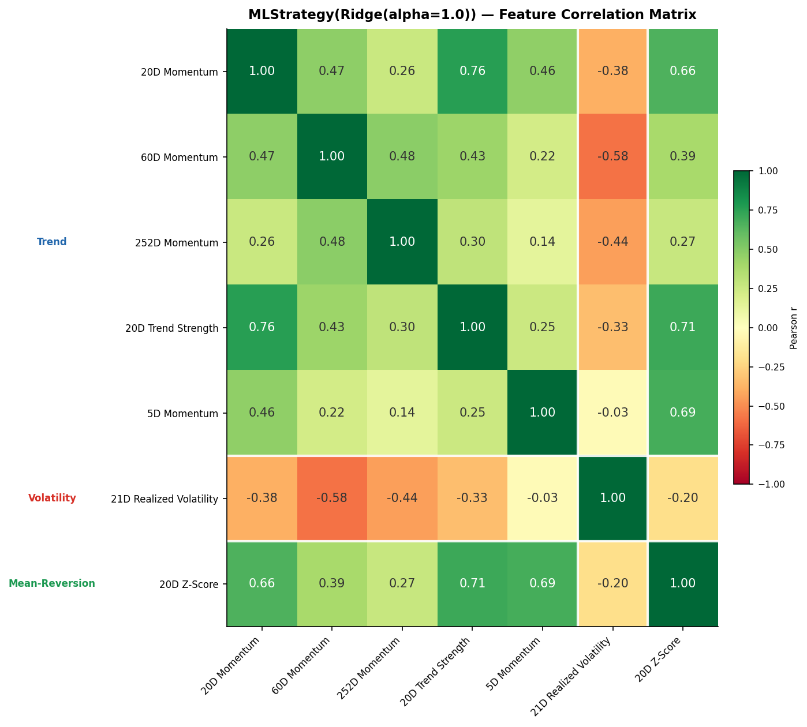
*Pairwise feature correlations. Correlated clusters reduce effective dimensionality; Ridge regularisation partially mitigates collinearity but reduces coefficient interpretability.*
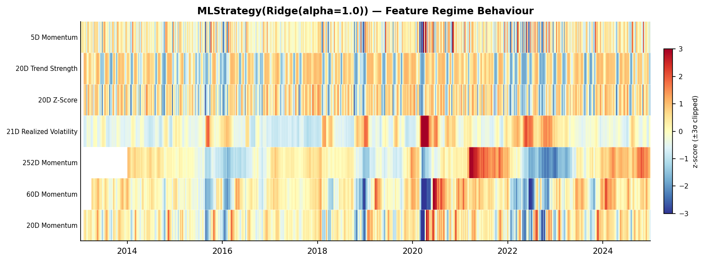
*Feature z-scores through time (±3σ). Red bands mark extreme positive regimes; blue marks extreme negative. Reveals when features were informative and where the environment shifted across the backtest period.*
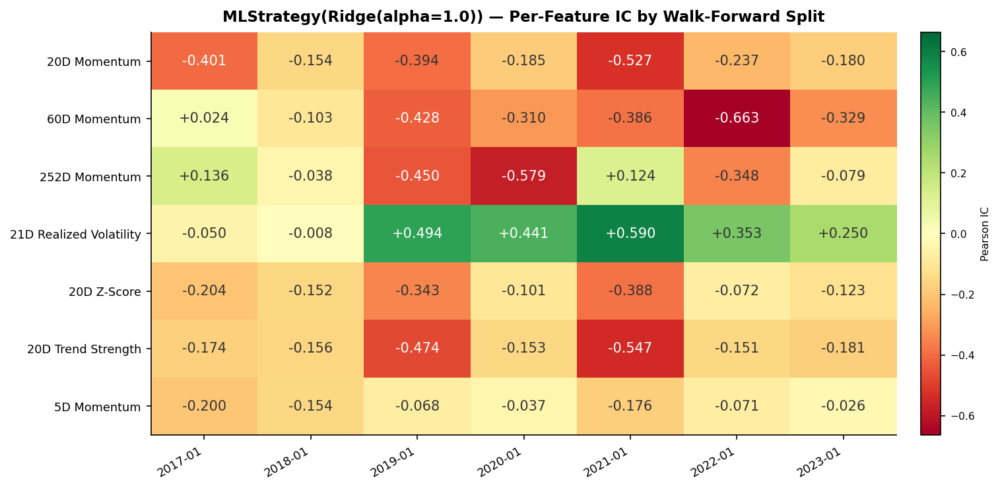
*Pearson IC per feature per walk-forward test split. Green cells mark positive predictive relationships; red marks breakdown. Reveals whether feature predictive power is consistent or regime-specific.*
Feature family grouping:
| Family | Features | Hypothesis |
|---|---|---|
| Trend | 20D Momentum, 60D Momentum, 252D Momentum, 20D Trend Strength, 5D Momentum | Directional momentum and price-continuation signals. Positive IC in trending regimes; may … |
| Volatility | 21D Realized Volatility | Risk-regime indicators capturing realised and implied volatility structure. Tend to be neg… |
| Mean-Reversion | 20D Z-Score | Price normalisation and short-horizon reversion pressure. Effective when markets are range… |
This experiment deploys 7 features across 3 canonical families. Each family operationalises a distinct market hypothesis; orthogonal families provide diversified information sources, reducing model dependence on any single regime hypothesis.
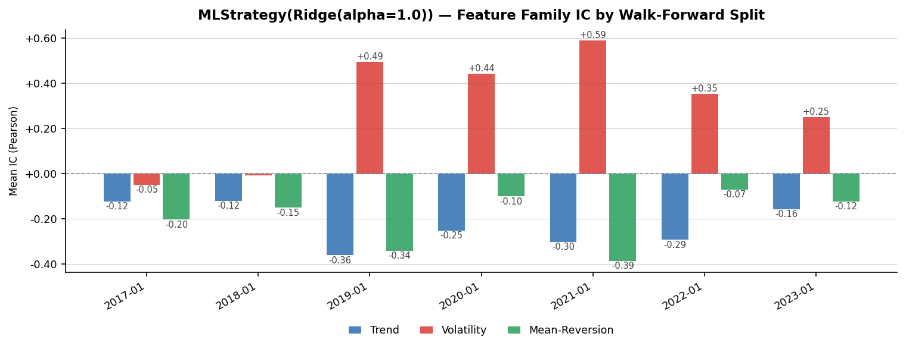
*Mean Pearson IC aggregated by feature family per walk-forward split. Positive bars confirm that the family hypothesis held in that regime; negative bars indicate systematic reversal. Persistent dominance by a single family flags model concentration risk.*
All backtests use a strictly vectorized, look-ahead-safe execution framework. The critical invariant: no information from period *t* enters the position that earns the return of period *t*.
Timing convention:
| Step | Action | When |
|---|---|---|
| Signal computed | Momentum scores calculated from all prices ≤ day *t* | Close of day *t* |
| Position entered | Computed weights applied to portfolio | Open of day *t+1* |
| Return realized | Portfolio return earned | Close of day *t+1* |
Implementation: applied_weights = weights.shift(1). The strategy never observes the return it will receive when deciding to trade. The first row of every backtest has a zero position — the portfolio is flat until the first valid signal propagates through the one-day lag.
Portfolio return computation per period:
`
gross_return_t = sum_i( weight_{i,t-1} * asset_return_{i,t} )
transaction_cost_t = sum_i( |weight_{i,t} - weight_{i,t-1}| ) * (5 / 10_000)
net_return_t = gross_return_t - transaction_cost_t
equity_curve_t = product_{s<=t}( 1 + net_return_s ), anchored at 1.0
drawdown_t = ( equity_t - max_{s<=t} equity_s ) / max_{s<=t} equity_s
`
Transaction cost model: One-way costs of 5 bps are applied to each unit of absolute portfolio weight change. Cost is incurred only on actual weight changes — during forward-fill periods between rebalances, weights are unchanged and no cost is deducted.
Turnover definition: Daily turnover = sum of absolute weight changes across all assets per period. High mean daily turnover implies high transaction cost drag; the cost model above makes this drag explicit.
**Signal-to-portfolio pipeline for RidgeRegression on SPY:**
`
prices[t-window : t]
→ feature_matrix('mom_20', 'mom_60', 'mom_252', 'vol_21', ... (7 total))
(X: 7 columns, no NaN rows, pre-alignment)
→ RidgeRegression.predict(X_clean)
(raw score: expected forward returns)
→ signal_fn(predictions) [sign]
weight_t = 1 if predicted > 0 else 0 (long or flat)
→ forward_fill to daily index
→ shift(1) [look-ahead prevention]
→ weights applied in portfolio backtest engine
`
Leakage-prevention: The shift(1) operation ensures that the weight active on trading day *t* was computed from information available only up to close of day *t−1*. The first valid signal enters the portfolio on the trading day following the first non-NaN prediction.
Position sizing: Equal-weight long-only. The model takes a full unit position when the prediction is positive and holds cash (zero weight) when the prediction is non-positive. There is no fractional position scaling — all conviction comes from the binary direction of the prediction.
Transaction cost model: Costs are applied to every unit of absolute weight change per period. The model's net alpha must exceed the cost drag implied by its turnover to be viable in a live deployment.
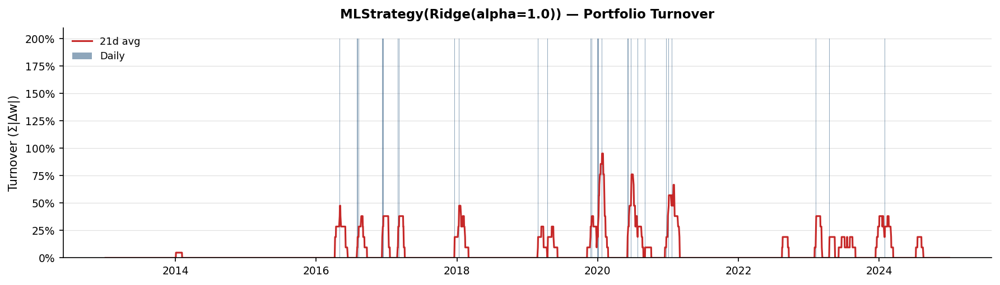
*Portfolio turnover quantifies daily weight change magnitude — the primary determinant of transaction cost drag. Periods of elevated turnover reduce net returns through friction. Turnover spikes that coincide with drawdown periods indicate cost-exacerbated losses: the signal is reversing precisely when it is most expensive to act on, amplifying rather than merely reducing performance.*
Predictive quality:
| Metric | Value |
|---|---|
| Directional accuracy (full period) | 66.4% |
| Mean monthly IC (Pearson) | 0.4975 |
| % months with positive IC | 87.8% |
| Aligned training samples | 2,747 |
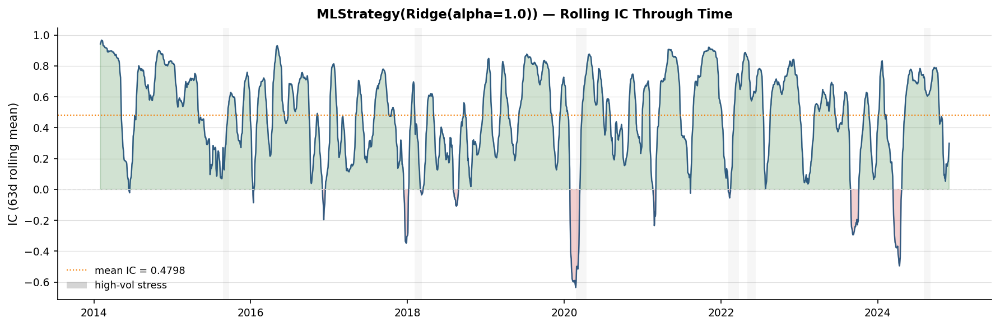
*Mean IC 0.498 (88% positive) — strong directional signal. Sub-period troughs mark regimes where the feature space lost predictive content.*
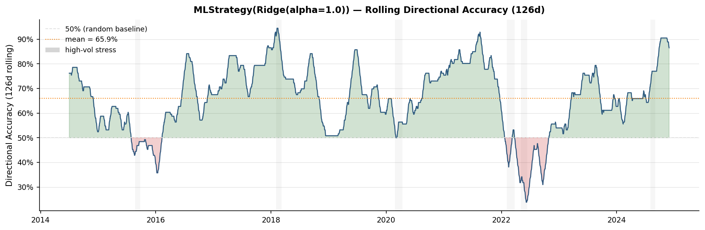
*Full-period directional accuracy 66.4%. Periods below 50% indicate the model generated net-incorrect directional calls — regime-linked degradation, not statistical noise.*
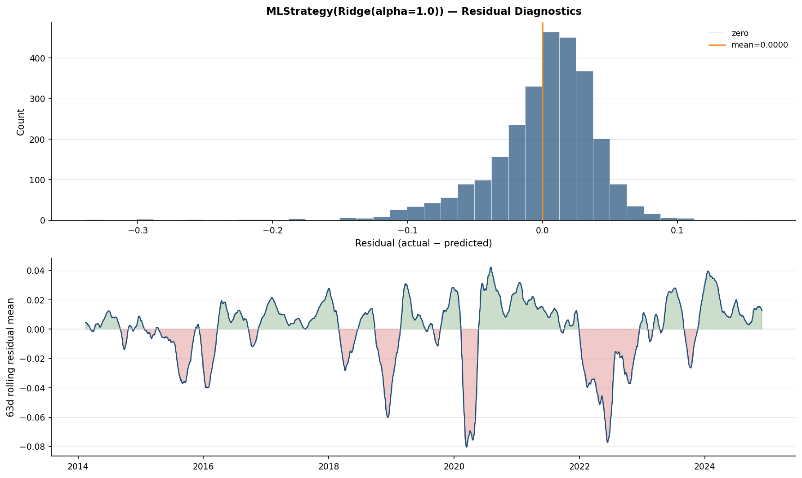
*Symmetric residuals near zero indicate an unbiased model. Skew or heavy tails signal calibration failure in extreme regimes. Rolling residual mean reveals temporal bias drift. 92% positive predictions — long-biased; errors skew toward missed downside. Directional accuracy: 66.4%.*
Prediction confidence calibration:
| Quintile | N | Mean pred | Mean actual | Dir. accuracy |
|---|---|---|---|---|
| Q1 | 550 | +0.0001 | +0.0059 | 59.3% |
| Q2 | 549 | +0.0044 | +0.0033 | 63.8% |
| Q3 | 549 | +0.0080 | +0.0046 | 65.4% |
| Q4 | 549 | +0.0125 | +0.0140 | 75.0% |
| Q5 | 550 | +0.0257 | +0.0229 | 68.7% |
*Q5 accuracy (68.7%) exceeds Q1 (59.3%) — prediction magnitude carries information; higher-conviction signals are more accurate.*
Feature importance summary (sorted by sign consistency):
| Feature | Full-period coef | Mean OOS coef | Sign consistency |
|---|---|---|---|
| 60D Momentum | -0.0798 | -0.0641 | 86% |
| 252D Momentum | +0.0199 | -0.0388 | 71% |
| 21D Realized Volatility | +0.0647 | +0.0357 | 71% |
| 20D Z-Score | -0.0002 | -0.0003 | 71% |
| 20D Momentum | -0.0414 | -0.0102 | 57% |
| 20D Trend Strength | -0.0016 | -0.0024 | 57% |
| 5D Momentum | -0.0082 | -0.0047 | 43% |
*Full-period coef is from the model fitted on all data; mean OOS coef is the average across walk-forward splits. Divergence between the two indicates regime-specific learning — the full-period model captures structure the walk-forward splits did not consistently reproduce.*
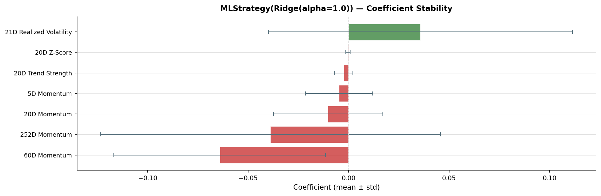
*60D Momentum most stable (86% sign consistency); 5D Momentum least stable (43%) — regime-dependent contribution. Wide error bars or sign reversals indicate training-regime-specific fitting.*
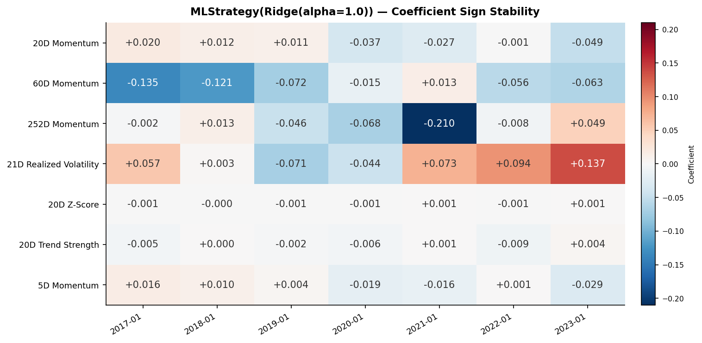
*20D Momentum, 20D Trend Strength, 5D Momentum change sign across splits — regime-specific learning, not stable directional relationships. Stable features maintain colour throughout; reversals are the instability signature.*
Feature contribution measures realised predictive influence: coefficient × standardised feature value at each date. Unlike static coefficient tables, contribution captures when each feature was activated, suppressed, or inverted — exposing how the model's internal predictive structure evolved through time.
| Diagnostic | Value |
|---|---|
| Dominant family (by contribution share) | Trend (81% of periods) |
| Family leadership transitions | 19 |
| Mean contribution concentration (HHI) | 0.567 — concentrated (one family dominates) |
| Most temporally volatile feature | 60D Momentum |
The Trend family dominated predictions in 81% of periods, indicating the model's directional prediction signal was concentrated in a single predictive hypothesis for most of the backtest. This is characteristic of a momentum-regime environment where trend information dominates.
Contribution structure was stable and concentrated — 19 family leadership transitions across the backtest — consistent with a model that operated in persistent predictive regimes rather than frequently adapting.
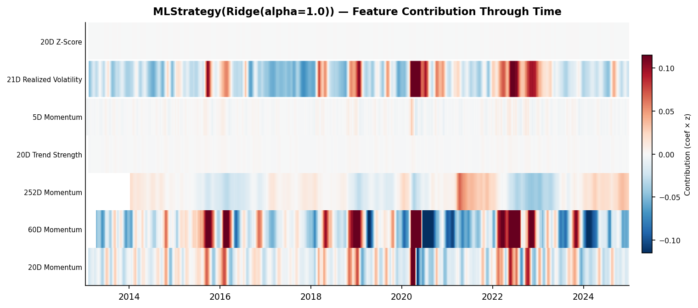
*Feature contribution heatmap: realised predictive influence (coefficient × standardised feature value) for each feature through time, grouped by family. Red = positive contribution (feature state predicts above-average cross-sectional return); blue = negative. Family separators mark hypothesis boundaries. Regime shifts appear as horizontal band colour transitions; simultaneous sign changes across a family reveal coordinated hypothesis activation or suppression.*
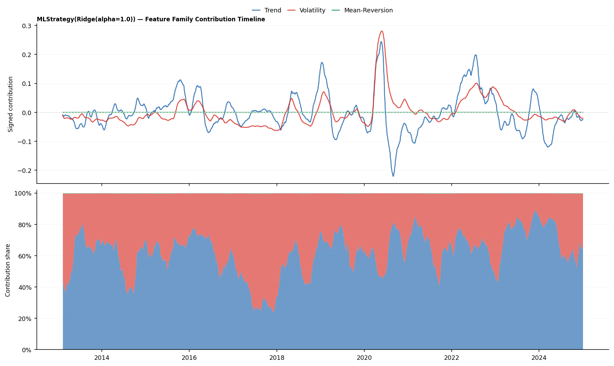
*Feature family contribution timeline. Top panel: signed rolling family contributions — shows which hypothesis family drove predictions and in which direction. Persistent positive contributions indicate an actively reinforcing family; negative contributions indicate the family is working against the dominant direction. Bottom panel: normalised absolute contribution share — shows family dominance through time regardless of sign. Regime shifts appear as share transitions between families.*
The 7 walk-forward test windows are classified into high-volatility (3 splits) and low-volatility (4 splits) regimes using median cross-asset 21D realised volatility as threshold. This classification exposes conditional IC behaviour — which feature families provided signal under stressed vs calm conditions.
| Feature Family | High-Vol Mean IC | Low-Vol Mean IC | Differential |
|---|---|---|---|
| Trend | -0.223 | -0.237 | +0.014 |
| Volatility | +0.262 | +0.321 | -0.059 |
| Mean-Reversion | -0.108 | -0.265 | +0.156 |
The Volatility family provided the strongest IC in both volatility regimes, indicating a regime-persistent directional hypothesis. The IC differential across regimes reveals the degree of regime sensitivity within this dominant family.
Mean-Reversion shows the largest regime sensitivity (differential +0.156), contributing stronger in high-vol splits.
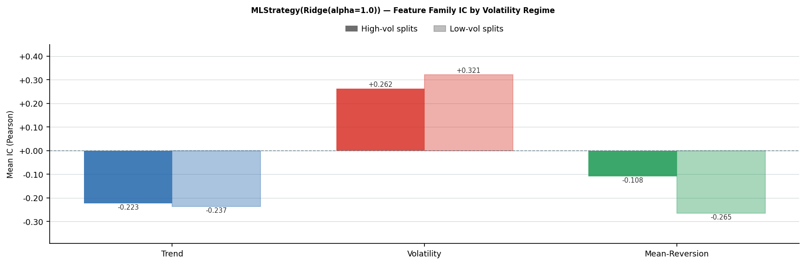
*Feature family mean IC disaggregated by vol regime. Solid bars = high-volatility test splits; faded = low-volatility. Regime threshold: median cross-asset 21D realised vol across 7 test windows. Sign reversals between solid and faded bars indicate regime-dependent hypothesis flips.*
| Metric | Value |
|---|---|
| Annualized Return | 0.1010 |
| Annualized Volatility | 0.1646 |
| Sharpe Ratio | 0.6671 |
| Max Drawdown | -0.3410 |
| Calmar Ratio | 0.2961 |
| Hit Rate | 0.4877 |
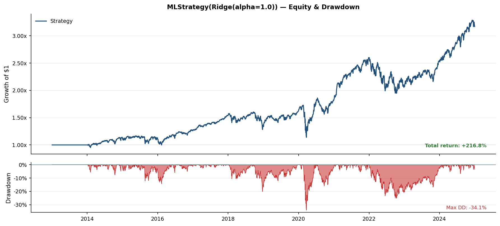
*Max drawdown -34.1% — severe. Sharpe 0.67. Slow recovery indicates signal-edge loss, not random noise.*
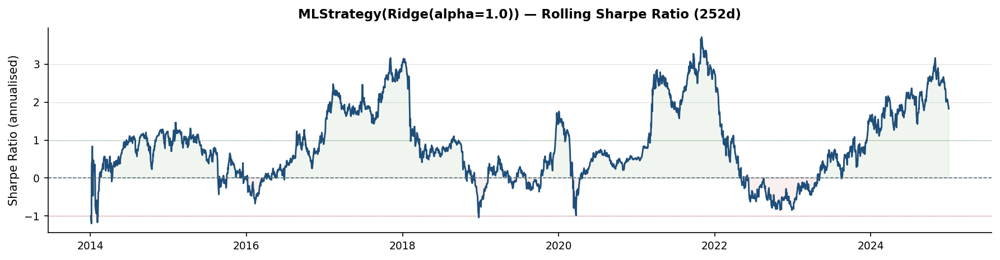
*Extended sub-zero periods mark sustained underperformance episodes. Rolling Sharpe variance is as diagnostically informative as its mean.*
Chronological rolling validation: each test window immediately follows its training window in calendar time, with no overlap. This is the only leakage-safe simulation of live deployment — the model is never tested on data from periods it could have seen during training.
Validation type: rolling
| Parameter | Value |
|---|---|
| step_months | 12 |
| test_months | 12 |
| train_months | 48 |
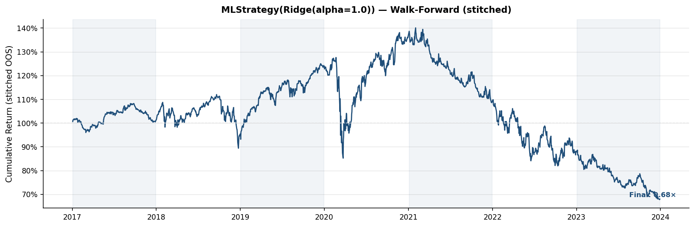
*Concatenated OOS test segments in chronological order. Consistent segment slopes across different market regimes confirm structural alpha. Persistent growth through stress periods is the strongest evidence of generalisation.*
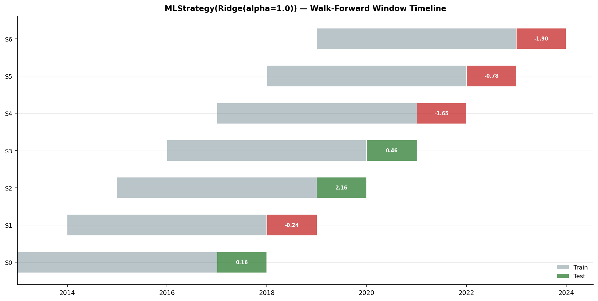
*Train/test windows in calendar time with OOS Sharpe annotated. Green test bars are positive-Sharpe splits; red are negative. Window widths reflect the configured train and test lengths.*
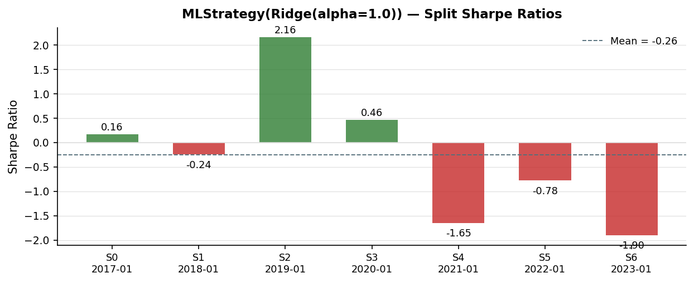
*Per-split OOS Sharpe distribution. High variance across splits indicates regime-dependent performance; a single outlier inflating the mean is a key failure mode.*
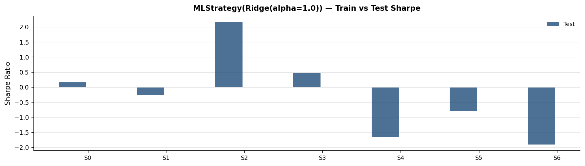
*Mean OOS Sharpe -0.26 across 7 splits (negative, 43% positive). Large per-split gaps mark regime-specific overfitting.*
Failure analysis — ML signal:
*Out-of-sample verdict:* RidgeRegression failed to generalise out-of-sample: 4 of 7 test windows produced negative Sharpe (mean OOS Sharpe: -0.26). The in-sample signal does not survive chronological validation — the primary evidence of overfitting or regime specificity.
Known failure modes for ML price-history strategies:
mom_20, trend_20, mom_5 show sign consistency below 60% across walk-forward splits, indicating their directional contribution reverses in different training regimes. The model is learning regime-specific patterns, not persistent market relationships.Volatility-regime-conditioned performance:
| Vol regime | N obs | Realized Sharpe | IC | Dir. accuracy |
|---|---|---|---|---|
| Low | 909 | 9.86 | 0.0600 | 73.2% |
| Medium | 909 | 4.68 | 0.1821 | 65.7% |
| High | 909 | 1.65 | 0.3733 | 61.2% |
*Realized Sharpe deteriorates from low- to high-volatility regime (Δ8.21). IC follows the same pattern — regime-conditioned degradation, not random variation.*
Instability propagation:
Coefficient sign reversals in 20D Momentum, 20D Trend Strength, 5D Momentum indicate the model learned regime-specific rather than structural relationships. IC is consistently positive (88% of periods, mean 0.4975), propagating coefficient instability into signal degradation. Directional accuracy (66.4%) is above random; signal degradation from unstable features reaches realised trade outcomes. The Sharpe compression in high-volatility regimes confirms the propagation completes: feature instability → IC breakdown → ranking errors → losses.
Identified drawdown windows (> 5% peak-to-trough):
| Drawdown Start | Trough | Recovery | Max DD | Duration |
|---|---|---|---|---|
| 2020-02-25 | 2020-03-23 | 2020-06-11 | -34.1% | 107d |
| 2022-04-05 | 2022-10-12 | 2023-12-13 | -25.2% | 617d |
| 2018-12-04 | 2018-12-24 | 2019-02-22 | -20.2% | 80d |
Worst out-of-sample split:
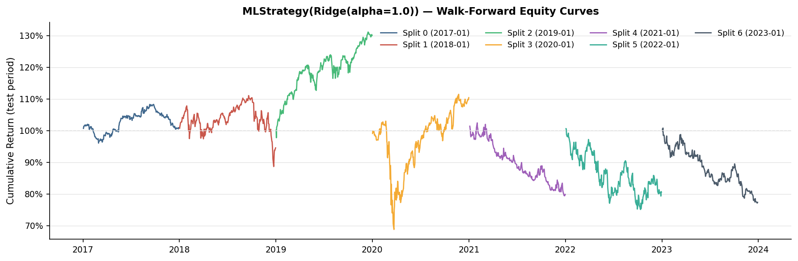
*Divergent split trajectories identify regimes where the signal broke down. Consistent slopes across periods indicate regime-independent alpha.*
Detailed diagnostics for walk-forward validation and ML signal quality.
| Metric | Value |
|---|---|
| Splits | 7 |
| Mean Sharpe | -0.2554 |
| Std Sharpe | 1.3805 |
| Positive-Sharpe rate | 42.9% |
| Mean annualised return | -3.83% |
| Mean max drawdown | -19.80% |
| Worst max drawdown | -33.21% |
| Metric | Value |
|---|---|
| Avg daily turnover | 0.0586 |
| Signal activity | 91.6% |
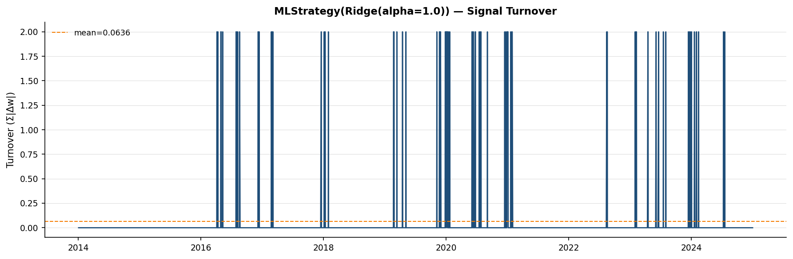
*Turnover spikes correlate with elevated cost drag. Coincidence with drawdown periods indicates cost structure amplifying losses.*
| Field | Value |
|---|---|
| Experiment | canonical_ml_showcase_v3_v2 |
| Strategy | MLStrategy(Ridge(alpha=1.0)) |
| Created | 2026-06-06T12:57:39.231814+00:00 |
Universe: SPY
Date range: 2013-01-01 to 2024-12-31
Strategy type: ML / RidgeRegression
Transaction cost: 5.0 bps
Validation: rolling
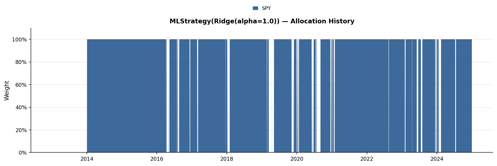
*Stacked allocation history — fractional weight per asset at each rebalance date. Concentration corresponds to momentum leaders in the cross-sectional ranking.*
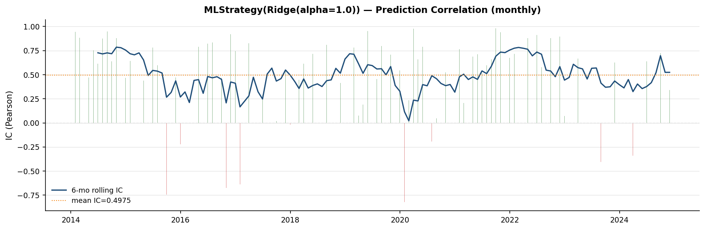
*Monthly rolling information coefficient (Pearson correlation of predicted vs actual returns). Persistent positive IC confirms the model adds directional information beyond chance.*
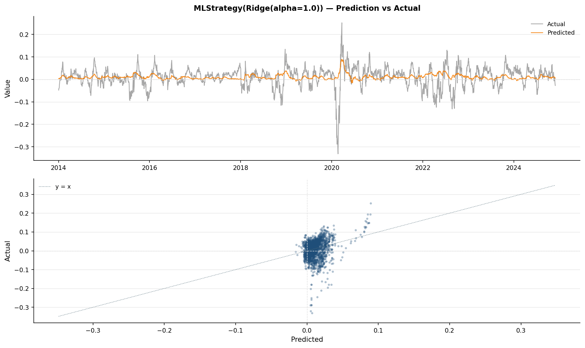
*Prediction vs actual overlay (top panel) and scatter (bottom panel). Appendix-level supplement to the rolling IC diagnostics. Concentration along the positive diagonal confirms directional alignment.*
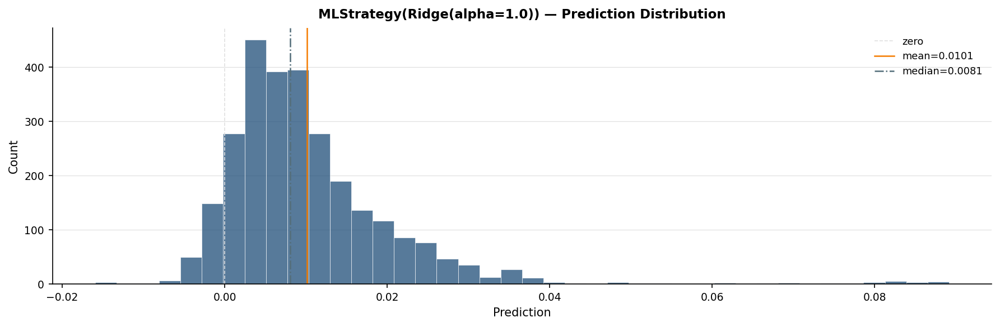
*Distribution of raw model predictions. Near-symmetric distributions centred near zero indicate a well-calibrated model without directional drift or label leakage.*
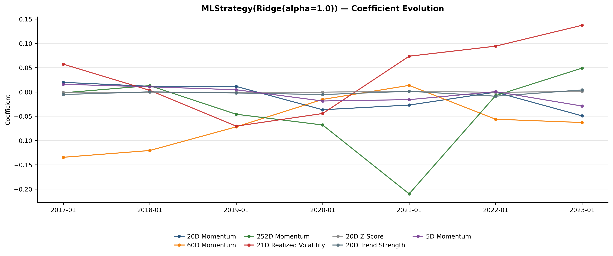
*Coefficient trajectory across walk-forward splits (chronological). Stable features maintain consistent sign and magnitude; unstable features cross zero, indicating regime-dependent learning.*
| Key | Value |
|---|---|
| ML hash | 4962c24e7a34 |
Report version: 1 Generated: 2026-06-06T12:57:48.095783+00:00 Source experiment: canonical_ml_showcase_v3_v2